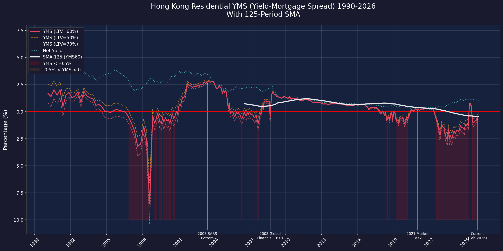

本報告基於差餉物業估價署（RVD）及香港金融管理局（HKMA）官方數據，計算香港私人住宅物業的YMS（Yield-Mortgage Spread，回報率與按揭息差）。YMS是衡量住宅物業投資回報相對於融資成本的關鍵指標。
截至2026年2月，香港私人住宅的整體平均毛回報率為2.80%，扣除1.8%持有成本後的淨回報率僅1.00%。與此同時，1個月HIBOR（銀行同業拆息）處於2.41%水平。在60%按揭成數（LTV）假設下，YMS為-0.45%，已連續7個月處於負值區間。這意味著即使承造六成按揭，租金回報已無法完全覆蓋按揭利息成本，物業投資者處於「負現金流」狀態。
目前YMS水平雖仍遠優於1997年亞洲金融風暴期間的極端情況（YMS一度低見-3.22%），但已低於2021年市場高峰期的+0.26%水平，並正在逼近2008年金融海嘯後的負值區域。與2003年SARS後YMS高達+2.82%的極佳回報率相比，目前市場環境已出現根本性逆轉。
| 年份／時期 | 毛回報率 | 淨回報率 | 1M HIBOR | YMS (LTV=60%) | YMS (LTV=50%) | YMS (LTV=70%) | 市場狀況 |
|---|---|---|---|---|---|---|---|
| 1997年7月 亞洲金融風暴 |
~3.80% | ~2.00% | 6.80% | -2.08% | -1.40% | -2.76% | 極端負息差 |
| 1997年8月 港元狙擊 |
~3.87% | ~2.07% | 8.82% | -3.22% | -2.34% | -4.10% | ⛔ 歷史最低 |
| 2003年6月 SARS後底部 |
5.24% | 3.44% | 1.11% | +2.78% | +2.89% | +2.66% | ✅ 最佳買點 |
| 2008年9月 雷曼倒閉 |
3.96% | 2.16% | 4.36% | -0.45% | -0.02% | -0.89% | 短暫負息差 |
| 2021年1月 市場高峰 |
2.12% | 0.32% | 0.16% | +0.23% | +0.24% | +0.21% | 極低息支撐 |
| 2026年2月 最新 |
2.80% | 1.00% | 2.41% | -0.45% | -0.21% | -0.69% | ⚠️ 負息差持續 |
| 時期 | YMS水平 | 差距 |
|---|---|---|
| 1997年8月（金融風暴） | -3.22% | 尚優於當時 |
| 2003年6月（SARS底部） | +2.78% | 已大幅惡化 |
| 2008年9月（金融海嘯） | -0.45% | 持平當年 |
| 2021年1月（市場高峰） | +0.23% | 已轉負 |
風險因素：
• YMS已連續7個月為負值，顯示住宅物業投資處於負現金流狀態
• 雖然HIBOR從2025年高點（3.95%）回落至2.41%，但回報率同樣受壓
• 與1997年金融風暴相比，目前YMS的負值幅度雖然較小（-0.45% vs -3.22%），但持續時間更長
• 2021年時YMS仍為正數（+0.23%），得益於極低利率環境；隨利率正常化，YMS已轉為負值
• 歷史上YMS由負轉正通常伴隨：利率大幅回落（2008-2009年）或回報率顯著上升（2003年）
建議關注： 聯儲局減息周期進展、租金回報率趨勢、及銀行同業拆息變化